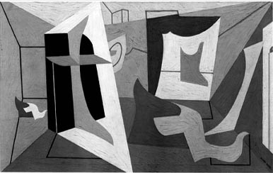

by John D. Angeline
|
Stuart Davis (1892-1964) has long been regarded as one of the most important American artists of the 20th century. He made a career out of assimilating various styles and concepts into his own personal arsenal of images and painterly devices, and most surveys of his oeuvre show an appreciation for the many stylistic shifts he underwent. He is equally respected for the almost heroic solitary figure he epitomized at times when modernism in this country was an all but forgotten movement. One of the most crucial set of paintings he executed was called the Egg Beater series, whose compositional and structural breakthroughs were so important to the artist that he once remarked to James Johnson Sweeney, "You may say that everything I have done since has been based on that eggbeater idea."
These works, executed in 1927-28, are paintings of abstract shapes, lines and planes that interact with one another in complex ways, and are invariably described in the literature as being cubist derived: Diane Kelder has called the Egg Beaters "the climax of Davis' efforts to master Cubist structure" 2 and Louis Kachur has written that Davis "had already proved himself an accomplished cubist with his recently completed Egg Beater series," 3 just to cite two recent examples. Furthermore, William C. Agee has carefully traced the entrenchment of cubism's lessons in Davis' art in his essay on Davis during 1922-24.  Yet Ruth Bohan has suggested an alternative inspiration this seminal series of Davis'. Bohan proposes that Davis found a catalyst in the works of El Lissitzky, whose paintings he saw at the 1926 survey of modern art that was organized by the Societe Anonyme and held at the Brooklyn Museum.4 While an in-depth study of Davis' series was not the goal of Bohan's nor entirely appropriate in the context of her study of the exhibition, there are enough substantial clues for a careful consideration of the possibility. Indeed it is quite odd that in the more than ten years since Bohan's book was published, no Davis scholar has been interested in bearing out or disproving her postulate, one which offers a completely new interpretation of the central body of work of one of the greatest American modernists. One which furthermore opens up the range of influences upon Davis to far beyond the incessantly evoked School of Paris. This paper is engaged in such an enquiry and there seem to be many good reasons to believe that in constructing his Egg Beaters Davis did rely upon Lissitzky as a main inspiration; furthermore it is clear that Davis' awareness of Lissitzky initially came from one source--the 1926 Brooklyn Exhibition and its organizer, Katherine Dreier. To begin with, a brief outline of Davis' career is in order. Davis, the son of artist parents (his father was an art director, his mother a sculptor), dropped out of high school to study art at Robert Henri's school, where he stayed from 1909-1912. Although at times in later years Davis would distance himself from some of the more restrictive aspects of Henri and his Ashcan School peers, he always made it clear that he valued Henri's tutelage, especially the focus on direct experience and the placing high value on an artist's ability to assimilate his environment, from high culture to the mundane or disreputable. His association with artists like John Sloan led to his being a cartoonist for the radical periodical The Masses, until a dispute over artistic control led to his and the publication's parting of ways in 1916. He continued to struggle for years as a painter, involving himself along the way with projects such as designing the interior of a ewark ice cream parlor in 19215 and textiles, working under the auspices of the WPA, and engaging himself in the activities of various artist/activist groups of the 1930's and 40's like the American Artists' Congress. In addition to his painting and design work Davis was a productive writer, from magazine articles to public letters to group manifestoes. Often in articles and interviews Davis would remark upon formative moments in his development, or he would be asked about key events at which he was present. Among these are his trips to Cuba (1920), New Mexico (1923), and Paris (1928), although at one point or another he would play down any great importance they had on his art. In New York he was first inspired and to a certain extent guided by Henri and the Ashcan School, but then he attended the 1913 Armory Show--in which he was represented--and he is often quoted as having said that this set him on the road to becoming a "modernist." However another exhibition of modern art which was just as important for Davis (if not more so) as the Armory Show, one in which Davis was also included, and one which clearly stimulated his creative imagination is also one which is rarely if ever invoked by people writing about Davis: the 1926 Exhibition of Modern Art held at the Brooklyn Museum and organized by the Societe Anonyme's president, Katherine Dreier. Katherine Sophie Dreier was born into a prominent Brooklyn family in 1877. Dreier's father, Theodore, had amassed a modest fortune in an iron importing business. Years later Katherine would thank him for "the vision he firmly held to, ahead of his time, of giving the same 'privilege to his daughters as he gave to his son." 6 Among the privileges conferred by the Dreiers to their children was the opportunity for education and with it an unshakable sense of civic commitment. In 1916 Dreier became a member of the Board of Trustees for the Society of Independent Artists and helped organize their massive 1917 exhibition at Grand Central Palace. It was through this exhibition that she first made the acquaintance of Marcel Duchamp, who was involved in an internal argument with the group over their reaction to his readymade piece entitled Fountain. Although Dreier was among those who initially opposed the inclusion of Fountain, she later came to appreciate Duchamp's intentions. They struck up a friendship that would last until Dreier's death, and he introduced her to the circle of New York Dadaists which found its home in the circle of Walter Arensberg. In 1920 Dreier and Duchamp decided to form a new institution for the support of modern artists and the education of the general public. Duchamp invited Man Ray to help them found the new group, although apart from some interesting photographs Ray's involvement was largely inconsequential. Still, Man Ray is credited with the name Societe Anonyme, which Dreier responded warmly to, relating the name to her concern with "art, not personalities." What Dreier did not initially realize was that societe anonymeis French for "incorporated," and that the name "Societe Anonyme, Inc." is a typical Dada wordgame, translating into "Incorporated, Inc." The watershed event in the Societe's history came in 1926 with its International Exhibition of Modern Art held at the Brooklyn Museum. The title was lifted from the 1913 Armory Show, in which Dreier was represented by two paintings, and in its scope it rivalled the 1917 'Society of Independent Artists exhibition.7 In addition to being a well-curated and highly attended exhibition of global modernism during a relatively quiet spell in America for such things, the Brooklyn exhibition also made deliberate attempts to affect people in a more lasting manner. Dreier had four galleries in the exhibition made up to resemble rooms in a house to illustrate how modern art could and should readily integrate into an everyday domestic environment, and there was also a prototype of a "television room," designed in conjunction with Frederick Kiesler, which would make any house or museum a worldwide museum of art by illuminating different slides of masterpieces with the 'turn of a knob.8 Concurrent with the exhibition the Societe sponsored eighteen lectures, fourteen of which were delivered by Dreier herself. Opened on November 18, the Brooklyn exhibition featured 308 works by 106 artists from 23 countries and attracted over 52,000 visitors in seven weeks. One of those visitors was Davis, who was also represented in the exhibition by his 1925 Still Life With Super Table. Davis was included in the exhibition after writing to Dreier. Dreier, like Davis himself, was a proselytizer for international modernism at a moment in American history when almost no one else was interested. She and Davis had both shown their artwork in the Armory Show and knew some of the same people but apparently had never become acquainted with one another. At the time when Drier was planning the Brooklyn exhibition there had not been a survey of modern art on such a scale since at least the 1917 Independent Show. Davis' excitement over the prospect of being in such an exhibition is evident in a letter he wrote to Dreier: "Burliuk saw my work and said I should be in the show. I would like very much to be a member of the Societe and will do 'anything you may suggest to make it possible..."9 Even if his tone was somewhat overly polite and solicitous, the genuine feeling of interest and desire to be included is apparent. Dreier responded warmly to 'Davis, telling him she had followed his work for years10, and later upon seeing his painting wrote "I was delighted when I saw your picture 'and...I shall, of course, exhibit it."11 The exhibition, which was accompanied by a catalogue and a lecture series, was by many accounts a successful affair. It was the first introduction in this country of Surrealism and offerred a much larger sampling of Soviet and German (and simply non-French) modernism than was the norm in America at the time or had been included in the Armory Show (which had included out of the German school only one Kandinsky, one Kirchner, and two Lehmbruck sculptures, and out of the Russians only Archipenko was included). Davis was forthright in his praise for the exhibition, writing that "the exhibition itself was an inspiration to me and has given me a fresh impulse."12 By this point Davis and Dreier seem to have struck up a friendship, inviting one another over for discussions when they were both in Manhattan, and Davis offerred his services to the Societe . Indeed, Davis did not stop commenting on the Brooklyn show after it had left the museum. All participating artists were given a complementary copy of the catalogue and Davis seems to have made use of his. He wrote to Dreier "Looking through the catalogue has been a very stimulating experience. I have gotten more from the catalogue than from the exhibition itself owing to the understanding that comes with familiarity. It would interest me very much to see more reproductions of the constructionist [sic] school, Lissitzky, etc..." out of 106 artists Lissitzky is the only name he singles out, and he then continues: "Inquiry at the stores where art books are sold failed to produce any and so I thought I might be able to see some in your library. I would also like to talk to you about art and living conditions in Germany. It is possible I may go there."13 While there is no record of what books Dreier might have lent to Davis, the two seem to have had discussions about art. Since Dreier was fresh from closing the Brooklyn exhibition (which had travelled to Manhattan, Buffalo and Toronto) and had acquired some Lissitzky works for the Societe she was definitely prepared to answer most of Davis' questions. Furthermore she was preparing an exhibition of Lissitzky and Schwitters for 1928, and was actually corresponding with both Lissitzky and his wife, Sophie Kuppers. Although this exhibition never took place, Dreier had maintained a strong appreciation for Russian modernism since 1922 when she visited the Erste Russiche Kunstausstellung in Berlin. Although she and Lissitzky never met, their correspondence was certainly warm, and Dreier would furthermore supply Lissitzky with sports magazines and other graphic material which reflected American culture to him.14 Given the amount of information that Dreier was able to supply (knowledge virtually no other of their peers was capable of imparting) Davis must surely have been excited by the many parallels between himself and the Russian artist. Both men were among the pioneering modernists of their time. Both lived socially committed, anti-bourgeois lives in which they turned to serious art study and practice as teenagers. They both wrote prolifically and helped to organize artist groups and exhibitions, yet their art was often purely abstract and non¬ narrative. Both men were primarily painters who worked in other media including design (Davis, who supported himself for a time as a commercial artist had designed a cafe interior and some limited edition publications15 as well as textiles; Lissitzky, who at times supported himself doing ad work, designed exhibition spaces and graphic projects, and was one of the principle innovators of modern typography and photomontage). And both were clearly willing to look to sources outside of the too-often cited Parisian ones: Davis expressed an interest to Dreier in visiting Germany (according to his interview with Harlan Phillips he had studied German in high school whereas he knew no French) and Lissitzky was a frequent dweller in that country. The main examples of Lissitzky's work that Davis was exposed to were his Prounen. This series of calculatedly arranged architectonic abstract shapes was executed by Lissitzky from 1919 to 1924. The word Proun has been given some differing interpretations but the standard seems to have been as an acronym for PROjekty Utverzhdeniya Novogo 'Projects for the Affirmation for the New.16 These works took the pure, reduced geometric shapes that were produced in the Russian Suprematist movement and gave them an ambiguous materiality and broader set of applications. Sophie Kuppers has described the Prounen as follows: "There, within the confines of the picture-frame, was cosmic space, in which floating geometric forms were held counterpoised by tremendous tensile forces,"17 and mentions that Lissitzky regarded them as "the interchange...between painting and architecture. "18 Many of these concepts find their reflection in Davis' treatment of the Egg Beaters. John Lane has discussed this series in terms of "the forging a harmonious relationship between the geometric planes representing subject matter transferred to a flat surface."19 James Johnson Sweeney presents them as "an invented series of planes which was interesting to the artist." And in relation to Lissitzky's and Kuppers' discussion of "cosmic" ( in other words, nonmaterial or somewhat abstract) architecture, Davis himself wrote that "the interior of the shapes consisted of houses, trees, and sky, much as they appeared in nature."20 And both artists were essentially concerned with a new constructed spatiality, as is evident in the following statements ``Proun goes beyond painting and the artist on the one hand and the machine and the engineer on the other, and it advances to the construction of space, divides it by the elements of all dimensions, and creates a new, multi-faceted unity as a final representation of our nature. 21 By DRAWING I mean following the contours of planes. Interesting work must be a drawing. The fact that with the rectangle of the canvas you have DRAWN already a plane at right angles to the lines of sight. The DRAWING of the large planes of your subject must bear an understandable spatial relation to the plane of the canvas, thus--the DRAWING is the contour of a cubical space visualized as an ideal unit by the artist.22 In such writings and others like them each artist has laid out a somewhat obscure yet extremely compatible system of reconstructed space, reconfigured subjects, machine aesthetics and angular geometric forms with which to put forth their artistic message. Furthermore, both emphasize the confines of the rectangular canvas even as they attempt to subvert it. The similarity between Davis' and Lissitzky's two series extends beyond overlapping theories. One need only to examine some examples from each series to see the relationship. While there were seven paintings by Lissitzky in the Brooklyn exhibition- LN 31, Proun 2PR, Proun 99, el Proun 97, W.B. Proun 98, Proun 100, and Proun 95 there was only one reproduced in the catalogue that Davis continued to examine-- Proun 99 [Fig 1]. This painting is both highly ephemeral with its nonrepresentational floating forms and materialistically grounded with its silver and black paint and perspectival grid. Yet standard conventions of dimensionality are subverted, as in the fact that the diagonals of the grid do not converge as they should in true Renaissance perspective and the cube has been observed as having a "dual appearance as either a solid with one point toward the viewer or a hollow with a receding corner."23 These blocky forms are complemented by thin wiry lines which change color depending upon their background. Many of the same things could be said, for example, about Egg Beater No. 1 [Fig. 2] or No. 4, with their large diagonal planes which seem to inscribe a new space yet bear no true perspectival relation with the rest of the created spaces. Furthermore, these paintings also contain thin wiry lines that change colors given the ground they are placed upon. Likewise, in Egg Beater No. 3 [Fig. 3] the lines on the left of the composition could alternately be inscribing a receding square or an advancing one, just like Lissitzky's ambiguous cube.24 The sharp faceting and transparency of planes in the Egg Beaters also have equivalents in works like Lissitzky's LN 31 [Fig. 4] with its suggestion of glass forms. A survey of Lissitzky's works that were either owned by Dreier or are clearly related to hers bears out the same structural and coloristic affinities that the above comparisons do, including the use of simplified pure hues, the suggestion of architecture, and an emphasis on diagonal thrusts and Given the textual, theoretical, and visual evidence which indicates just how closely Davis was involved in Lissitzky's project we are left with a fairly obvious question: why has this never been discussed before Bohan nor explored after her? It would seem that the answer to this question has two parts. In the first place, Davis did not ever cite Lissitzky, or Soviet or German modernism as an influence in any of his writings, interviews, or biographical sketches. This of course does not mean that they did not exist, and hopefully we have by now established that they did. Very often an artist will edit his or her recollections and statements to create or help streamline his or her personal mythos. There is no perfectly evident reason why Davis would choose to downplay Lissitzky and Dreier, although some possibilities may include his desire to distance himself from Communism in the late 1930's and 40's, and the nefarious (and decidedly anti-American) taint that Germany would soon acquire after the election of the national Socialists in 1933. Part of the Davis mythos is his quintessential Americaness, and while this did not preclude involving Paris in the narrative, it has always been acceptable--in fact, almost de rigueur--for early American modernists to establish their ties to the Parisian avant-garde. The other reason for ignoring a non-French influence is, as has been alluded to, the dominant role that the Parisian School has enjoyed in the history of modernism (a privilege that still largely continues to this day, as the permanent collection galleries at the Museum of Modern Art attest to). Nevertheless,there are some examples of historians--and Davis himself--downplaying the role of cubism in the Egg Beaters. It is true that as early as when they were first shown some reviewers were issuing statements like "old fashioned group of 'Cubist pictures" to discuss the series,25 but others were not so quick to label: They did not seem to be cubism, nor did they seem to fall, either, in the category of sur-realisme."26 In 1930 Davis wrote an angry letter of rebuttal to Henry McBride who had earlier suggested that had Picasso never lived, Davis would have had to think out his own style, asking "Now is that nice, Mr. McBride?" and questioning both the dominance of Paris and the concept of a pure American art (the regionalists, to Davis, did not qualify). 27 And Karen Wilkin has recently noted that "The similarity between the Egg Beaters and Picasso's works of the late 1920's has often been noted. Davis, like many of his contemporaries, paid close attention to Picasso, but knew his work chiefly from reproductions. Picasso's pictures of this type were not shown in New York until Davis was well into the Egg Beater series."28 Furthermore, the Picasso works that most clearly relate, like The Studio of 1928, were not really reproduced until such periodicals like the Cahiers d'Art showed them in 1929. In short, it seems that sometimes cubism was simply used as an easy label, a sort of paradigm for all modernism (as it is sometimes used by the general public today and as Davis himself used it when trying to clear his paintings through Paris customs in 1928, according to the Phillips interview) and all the subsequent literature from 1928 until the present never chose to closely examine this classification. Indeed, Davis even showed some of the linear, planar tendencies of the Egg Beaters in earlier works like Super Table of 1925 and Percolator and Matches of 1927 [Fig. 11-13]. The latter two came after the influence of the Brooklyn show but even the earlier painting comes after Lissitzky had been shown by Dreier in New York in 1924.29 This paper was not attempting to remove all traces of Picasso and cubism from Davis' oeuvre, nor was it attempting to posit El Lissitzky and Soviet art as Davis' only inspiration. To do so would be to ignore the very versatility and inventiveness that is a chief characteristic of the artist's entire output and to deny the inquisitive nature and assimilative facility that were main features of the man's disposition. Wilkin has written that "the variousness of the 1920's is proof that these were still formative years, but they were also among the most eventful, professionally and personally, in his long career."30 Davis himself wrote "I did not spring into this world fully equipped to paint the kind of picture I want to paint."31 As Agee has written, "It is typical of Davis and one of the measures of his greatness that once he absorbed the lesson of each mode, he was quick to realize its limitations and moved on to more demanding pictorial challenges."32 By 1927 Davis had been actively immersed in cubist explorations for at least five years and it is not hard to imagine him ready to move on to newer, fresher, inspirations. During this time of rabid exploration he seized upon a new kind of art that he was able to both view firsthand and discuss at length thanks to Katherine Dreier, and the result was the central series of paintings in his long career, a series that marked his first complete leap into abstraction and whose structural lessons he would take with him to Paris and would return to in later paintings.
|
|
| Nor is the suggestion that Davis merely imitated Lissitzky being made. Davis had constantly proved himself able to explore, assimilate, and then modify (he might have said improve) the examples set forth by others. After exploring the facts and making comparisons of both the artists' works and their similar attitudes, a recognition of the role that El Lissitzky played in the Egg Beaters of Stuart Davis is unavoidable. Furthermore, the absolutely essential role that Katherine Dreier played can not be ignored. She managed to connect two disparate artists who never met one another, and through her efforts--both curatorial and pedagogical--helped to dramatically alter the course of one of America's most important artists and set him on the path of his mature style. |
|